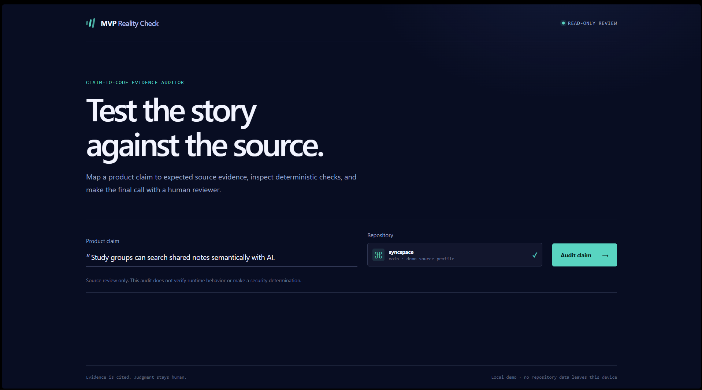

LIVE LOCAL PROTOTYPE localhost:4173

Interview demo · working artifact
A claim-first evidence audit that stays local, cited, and reviewable.

Product judgment · deliberate boundaries
The prototype proves the claim-to-evidence loop locally. The missing capabilities are production decisions, not ignored checkboxes.
Core loop proven
AI may explain cited evidence; it never determines the verdict.
Deferred by design
GitHub / GitLab needs OAuth, token handling, permission design, and consent.
Running arbitrary code needs isolated disposable containers to preserve the read-only posture.
Needs a configured model and budget; it remains explanation-only, never verdict generation.
Needs authentication, tenant isolation, retention controls, and audit logging.
Sensible next build
Build capability in layers—without weakening accountability.Then: AST/framework adapters · queued large-repository indexing · dependency, CI, and infrastructure evidence · production operations
Use ← → or Space to move · F to present